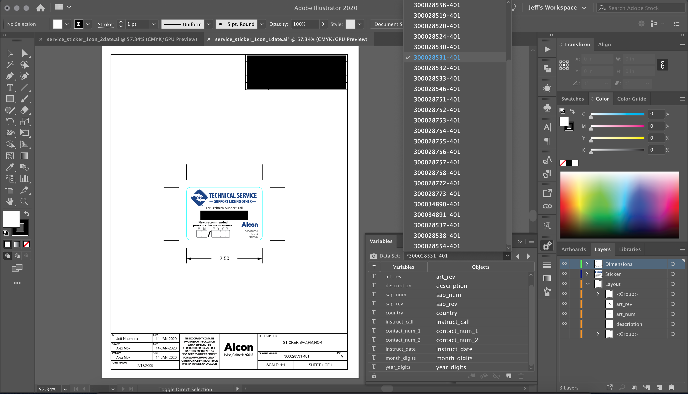

Service Label
 XML data set of localized content that matches Illustrator variables
Summary
This is a screenshot of the workspace in Adobe Illustrator I used to generate a service label that needed to be translated and localized in more than 60 regions around the world. With the help of feedback from the Global Technical Services department and global affiliates, I designed the label to display contact information and the next service date for the equipment. Another engineer determined the print vendor, materials, and location for the labels. These labels encouraged global customers to contact the company to schedule preventive maintenance. However, global field service engineers needed to order them and fill in appropriate dates.
To support so many regions and languages, I created variables to display different parts of the label in a specific language and with the appropriate contact information. The Data Set drop-down menu in the previous example shows a selection of different regions, each with a unique identification number, to choose from. The actual text or numbers to display in the variables were managed in a separate XML file I created and associated with the variables shown in the previous example.
To generate the labels, I created an Illustrator action to batch output each localized label in the data set in .pdf and .ai format. This process helped improve the time to generate the labels, ensure accuracy, and update parts of them (if necessary).
Responsibilities
My responsibilities were to design the label from a layout standpoint. I recommended creating a template to batch output the labels using XML to manage the actual content. However, to do this I had to ensure the design would fit text in other languages that could be significantly longer than others. I was also responsible for generating the version-controlled artwork file (shown in the previous example).
The actual translations and localization of text and contact information was done by global affiliates via email. After they were provided, I added them to the XML file under a new record with a provided ID number. The Technical Service and Alcon logos were created by another team and not subject to localization. Likewise, the color scheme followed Alcon branding guidelines.
The size of the label were also determined in conjunction with me, the print vendor, and the engineer responsible for choosing the vendor and materials. Ultimately, the size was picked as a minimal size needed to support the longest text requirements and that provided the most cost savings.
Tools Used
- Adobe Illustrator
- Adobe Dreamweaver and Notepad++